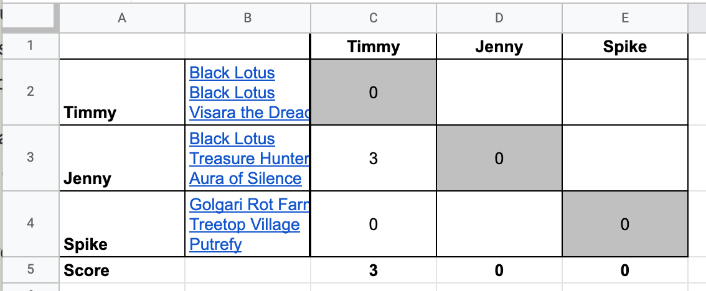

This is a weekly Magic: The Gathering 3-Card Blind event played over email. It's a weird little casual format where you submit decks of exactly 3 cards and we game out which deck would win.
It is frequently played on forums or reddit and we wanted to start one for friends and friends-of-friends. All you have to do to join is submit your first deck!
There will be a few house rules for this tournament, but we will mostly follow rules defined here. Give that wiki a read to get a sense of how this works!
The spreadsheet with leaderboards & the results of each week can be found here. The bottom of the spreadsheet shows a tab for each week of the tournament.
The tournament will be starting on Thursday, October 13! If you want to participate, just submit a deck before 3pm ET on Thursday, October 13 after checking out the house deck and current ban list!
The rules of this tournament, our tracking spreadsheet, and the majority of this website were taken from Andy's 3CB tournament! You can read about how he ran his here.
As long as we have 10 or fewer players, each deck will "play" every other deck. For each opponent you will play two games (one on the play, one on the draw). Each win gets you 3 points, each tie gets you 1, and you get nothing for losing. This means 6 points is the most you can get from a single match.
To be clear, we're not actually playing the games, just extrapolating who would win based on the deck lists and the fact that both players have perfect information (both players know the full contents of their opponents decks). Each matchup is mostly a thought exercise.
It will be up to each player to self report their matches by filling in the spreadsheet. If there are discrepancies between results I will make a ruling or open it up to discussion. This is a casual thing with a small group, so if there is an issue or something looks wrong, just be in touch.
This will be a weekly tournament! Here are the beats:
This is our first time running one of these, so this schedule is subject to change if it winds up being cumbersome.
To submit your deck each week (or however often you want to play), email your 3 cards to mtg@gex.quest.
To make our lives easier, please write your cards on a single line and have each card link to scryfall (ex: Golgari Rot Farm, Treetop Village, Putrefy).
Please also include your name or screen name so we can label the spreadsheet. To make leaderboards easy, please don't change your name unless you really want to. We'd like to be able to make the full spreadsheet with comment history public, so feel free to use a throwaway Google account if you'd rather it not be publicly associated with your personal Google account / Gmail address.
Please note that whatever email you use to submit will be visible to other players. We will email the group with the results of each round and would like to have that be the discussion space for the round. If that turns into a reply-all disaster, We'll stop, but we believe in us!
We submit our own decks before checking the email account for submissions. You'll have to take our word that we're not cheating.
The best performing deck each week will become the House Deck for the following week. You know you will be going up against it and can pick up points if your new deck can beat it.
Our hope is that this will encourage a meta for the week that savy players can exploit.
If one or more decks are tied for first, the house deck is determined by die roll as soon as results are announced.
You can view the current House Deck at the bottom of this page.
The tournament starts with no ban list beyond un-cards and ante. At the end of the week, the three cards from the winning deck will be banned.
If multiple decks are tied for first, two cards are banned from each of them.
You can view the current ban list at the end of this page.
This mostly lines up with the rules in the MTG Wiki post but we figure it's nice to have them spelled out. If anything is not covered here, but is in the wiki page, follow the wiki.
Once the decks have been submitted, we'll send out an editable version of the spreadsheet. It'll be up to each player to go to that week's tab and evaluate their deck against each other deck. To do this, you find the column with your name and go down comparing your deck to each other deck (written out on the left).
For each deck you face, imagine the game with you on the play and another one with you on the draw. Give yourself 3 points for each win and 1 point for each draw. You should wind up with 0, 1, 2, 3, 4, or 6 points.
Taking the example from the MTG Wiki, let's imagine Jenny goes to submit her scores. Timmy has already enetered his scores. Spike has not yet.

She finds her column and starts moving down. Against Timmy's deck, she wins on the play but not on the draw, so she marks 3 points. Against Spike, she loses both games so she marks a 0. She does not make any edits outside of her vertical column.
If two players post different results for the same match a judge will be called (probably me) to take a look. Players will have write access to the sheet for that week but I am counting on this being a chill group and folks not messing with other people's scores.
If you're not sure how to use the spreadsheet or you don't have an account that plays nice with google sheets, just let me know!
We're sending this page to people we know personally. If you have a friend who you think would like to play, feel free to send it to them. If we get an email from a source we don't recognize, we may ask who invited you but only to have a sense of who is playing.
Please do not post this in a public space like Reddit or Twitter. If you're thinking of sending it to a small group, that's probably fine but please check with us first.
If the game grows to more than 10 players, we'll have to start doing pods. We'll figure that out if we get there. If it grows to a lot of people, we might throttle the number of submissions because we don't really want to process 50 decks every week.
This will be updated each week.
Week 1 City of Traitors, Isochron Scepter, Lightning Helixbr/>


This will be updated each week.